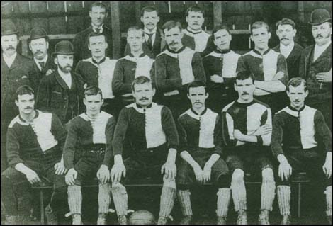

Manchester United
Old Trafford
Ранний период (1878—1945)

Клуб был сформирован под названием «Ньютон Хит (Ланкашир энд Йоркшир Рейлуэй)» (англ. Newton Heath L& YR F.C) группой рабочих-железнодорожников Манчестера в 1878 году. Клубная форма содержала два цвета — зелёный и золотой. На протяжении 15 лет команда выступала на небольшом полуразрушенном поле «Норт Роуд», после чего переехала на стадион «Бэнк Стрит» в Клейтоне в 1893 году. Годом ранее клуб вступил в Футбольную лигу и отделился от железнодорожной станции, став независимым. Была учреждена должность клубного секретаря, а из названия исчезло дополнение «Ланкашир энд Йоркшир Рейлуэй». Клуб стал называться просто «Ньютон Хит». В 1902 году команда была на грани банкротства, имея задолженность в размере более 2500 фунтов. Стадион «Бэнк Стрит» даже был закрыт судебными приставами. От закрытия клуб спас Джон Генри Дейвис, управляющий пивоваренного завода Манчестера, который вложил в команду солидные по тем временам инвестиции. С 26 апреля 1902 года клуб изменил название и стал официально называться «Манчестер Юнайтед». Одновременно поменялись клубные цвета — с зелёного и золотого на красный и белый.
В 1903 году клубным секретарём был назначен Эрнест Мангнэлл, под руководством которого «Юнайтед» вышел в Первый дивизион в 1906 году, а в сезоне 1907/08 выиграл свой первый чемпионский титул. В этот период в «Юнайтед» из соседнего «Манчестер Сити» перешёл ряд футболистов, включая Билли Мередита и Сэнди Тернбулла, ставших впоследствии ключевыми игроками команды. В 1908 году «Манчестер Юнайтед» выиграл первый в своей истории Суперкубок Англии, а в 1909 году — свой первый Кубок Англии. В сезоне 1910/11 «Юнайтед» во второй раз в своей истории стал чемпионом Первого дивизиона. В этом же сезоне клуб переехал на свой новый стадион «Олд Траффорд».
В последующее десятилетие «Манчестер Юнайтед» не смог выиграть новых трофеев, а в 1922 году вылетел во Второй дивизио. В 1925 году «Юнайтед» вернулся в Первый дивизион, но боролся лишь за попадание в первую половину турнирной таблицы, и вновь вылетел во Второй дивизион в 1931 году. За восемь лет, предшествовавших Второй мировой войне, «Юнайтед» постоянно перемещался между дивизионами, а в 1934 году занял самую низшую в своей истории позицию в чемпионате — 20-е место во Втором дивизионе. После смерти в октябре 1927 года Джона Генри Дейвиса, бывшего основным инвестором клуба, финансовое положение «Манчестер Юнайтед» резко ухудшилось, и к концу 1931 года клуб был на грани банкротства. Команду спас местный бизнесмен Джеймс Уильям Гибсон, погасивший долги клуба и ставший его новым председателем. Предвоенный сезон 1938/39 клуб завершил на 14-м месте в Первом дивизионе.
Эпоха Басби (1945—1969)
В 1945 году главным тренером «Юнайтед» был назначен Мэтт Басби. Под руководством Басби и его ассистента, Джимми Мерфи, клуб занимал второе место в чемпионате в трёх сезонах подряд: 1946/47, 1947/48 и 1948/49, а в 1948 году выиграл Кубок Англии. В сезоне 1951/52 «Юнайтед» выиграл чемпионский титул Первого дивизиона — спустя 41 год после своего последнего триумфа. Этот состав команды был уже достаточно возрастным, и Басби начал активно привлекать в основной состав игроков из молодёжного состава: Роджера Берна, Билла Фоулкса, Марка Джонса, Денниса Вайоллета. Успех пришёл не сразу: в сезоне 1952/53 обновлённая молодёжью команда Басби финишировала лишь на 8-м месте, но уже в сезоне 1955/56 «Юнайтед» стал чемпионом Англии. Средний возраст игроков этой команды составлял 22 года. Молодых воспитанников клуба того времени в прессе назвали «малышами Басби». В сезоне 1956/57 «Юнайтед» вновь выиграл чемпионат, а также дошёл до финала Кубка Англии и полуфинала Кубка европейских чемпионов, став первым английским клубом, принявшим участие в главном европейском клубном турнире.
Колмана, Дункана Эдвардса, Марка Джонса, Дэвида Пегга, Томми Тейлора и Лиама Уилана — и ещё пятнадцати пассажиров, включая членов тренерского штаба клуба Уолтера Крикмера, Берта Уолли и Тома Карри. Мэтт Басби получил тяжёлые травмы, но выжил и, спустя три месяца, вернулся к руководству клубом. К удивлению многих, лишённый игроков основного состава «Юнайтед» достиг финала Кубка Англии 1958 года, в котором уступил «Болтону». В конце сезона УЕФА предложил Футбольной ассоциации Англии заявить в Кубок европейских чемпионов два клуба — чемпионов Англии «Вулверхэмптон Уондерерс» и «Манчестер Юнайтед», в дань памяти жертвам авиакатастрофы, но Футбольная ассоциация отклонила это предложение. В сезоне 1958/59 «Юнайтед» завершил чемпионат на 2-м месте.
В начале 1960-х Басби начал перестройку команды, подписав таких игроков, как Денис Лоу и Пэт Креранд, одновременно продолжая искать и воспитывать молодых талантливых игроков. Возможно, самым известным из них стал уроженец Белфаста Джордж Бест. Обновлённая молодыми игроками команда Басби выиграла Кубок Англии 1963 года, хотя в Первом дивизионе финишировала лишь на 19-м месте. Уже в сезоне 1963/64 «Юнайтед» занял 2-е место в чемпионате, а в сезонах 1964/65 и 1966/67 стал чемпионом Англии. В 1968 году «Манчестер Юнайтед» вышел в финал Кубка европейских чемпионов, в котором обыграл португальскую «Бенфику» со счётом 4:1, став первым английским клубом, выигравшим этот турнир[39]. Три игрока из этого состава «Юнайтед» выиграли «Золотой мяч»: Бобби Чарльтон, Денис Лоу и Джордж Бест. В 1969 году Мэтт Басби покинул пост главного тренера, уступив его тренеру резервной команды и бывшему игроку «Юнайтед» Уилфу Макгиннесу.
1969 — 1986
Под руководством Макгиннесса «Юнайтед» занял всего лишь 8-е место в сезоне 1969/70, и после провального начала сезона 1970/71 Макгиннесс покинул пост главного тренера команды, вернувшись к тренировке резервистов. Басби согласился временно вернуться на пост главного тренера, но уже через 6 месяцев, летом 1971 года, окончательно покинул клуб. В это же время из команды ушёл ряд опытных игроков, в том числе Нобби Стайлз и Пэт Креранд. Главным тренером «Юнайтед» был назначен Фрэнк О’Фаррелл. Он, как и Макгиннесс, пробыл на посту главного тренера команды менее полутора лет, но, в отличие от последнего, покупал новых игроков для усиления состава. Возможно, самым важным его приобретением стала покупка Мартина Бакена из «Абердина» за 125 000 фунтов. В конце 1972 года главным тренером клуба стал Томми Дохерти по прозвищу «Док». Он спас «Юнайтед» от вылета в сезоне 1972/73, но уже в следующем сезоне клуб вылетел во Второй дивизион. К этому времени «звёздное трио» в лице Беста, Лоу и Чарльтона уже покинуло команду. На замену им были куплены Лу Макари, Стюарт Хьюстон и Брайан Гринхофф, но ни один из них не мог сравниться по мастерству с ушедшими легендами клуба. По итогам сезона 1974/75 «Манчестер Юнайтед» вернулся в Первый дивизион, а в 1976 году дошёл до финала Кубка Англии, в котором уступил «Саутгемптону». Год спустя «Юнайтед» всё же выиграл Кубок Англии, обыграв в финальном матче 1977 года «Ливерпуль» со счётом 2:1. Несмотря на этот успех и свою популярность среди болельщиков, Дохерти был уволен вскоре после финала, когда раскрылся его роман с женой клубного физиотерапевта.
Летом 1977 года Дохерти на тренерском посту заменил Дейв Секстон. Секстону не удалось выиграть с командой никаких титулов, и в 1981 году он был уволен со своего поста. Его заменил харизматичный Рон Аткинсон, чей экстравагантный и публичный имидж отражался на тренерской работе. Он сразу же побил британский трансферный рекорд, купив Брайана Робсона из «Вест Бромвича». Кроме того, Аткинсон подписал таких футболистов как Йеспер Ольсен, Пол Макграт и Гордон Стракан и ввёл в состав игроков из молодёжного состава — Нормана Уайтсайда и Марка Хьюза. Под руководством Аткинсона «Юнайтед» дважды выиграл Кубок Англии — в 1983 и 1985 годах — и был фаворитом в борьбе за чемпионство в сезоне 1985/86, когда команда выиграла 10 стартовых матчей чемпионата и к октябрю на 10 очков опережала ближайших преследователей, однако затем потеряла форму и финишировала лишь на 4-м месте. В следующем сезоне команда так и не смогла набрать нужные кондиции и к ноябрю 1986 года балансировала на грани вылета из Первого дивизиона. Аткисон был уволен и на его место был назначен шотландский специалист Алекс Фергюсон.